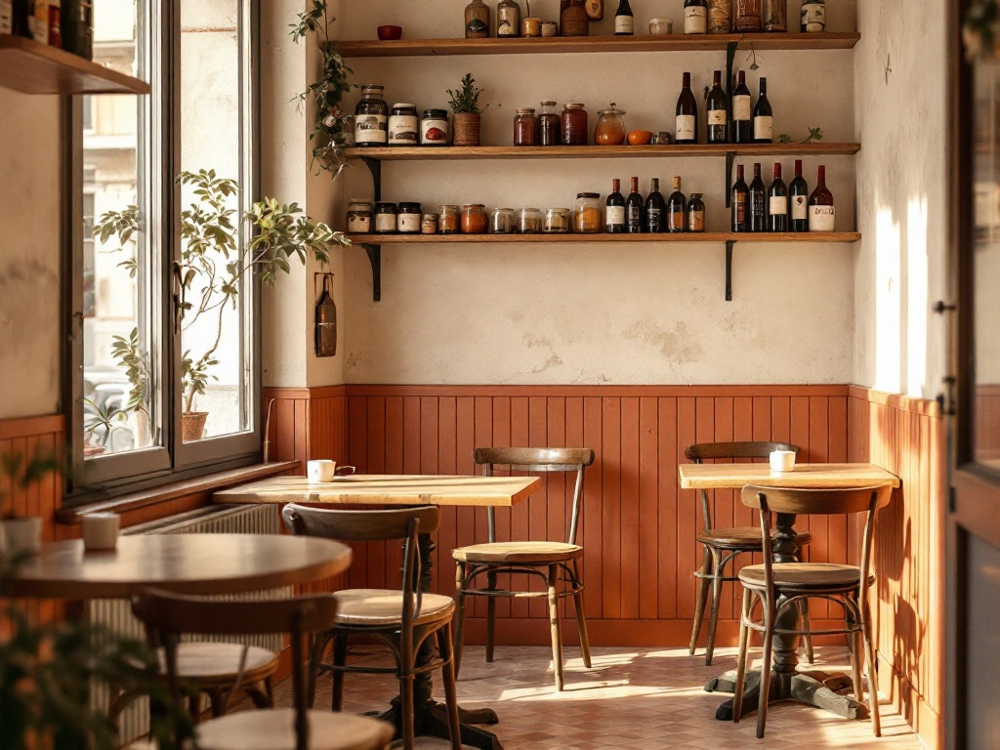

La casa madre
Fissa, in Via Polibio
Tavoli di legno, sedie spaiate, mensole con barattoli e bottiglie. È qui che il quartiere torna: la mattina per il caffè, la sera per l'aperitivo. La stanza in cui tutto è cominciato nel 2016.